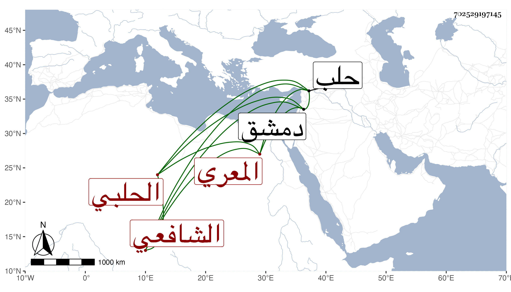

0902Sakhawi.DawLamic.ITO20230111-ara1.EIS1600.702529197145
Biography ID: 702529197145
22
محمد بن أحمد بن علي بن سليمان الشمس أبو عبد الله بن الركن المعري ثم الحلبي الشافعي ممن ينتسب إلى أبي الهيثم التنوخي عم أبي العلاء المعري . ولد في سنة بضع وثلاثين وسبعمائة وتفقه وأخذ عن الزين الباريني والتاج بن الدريهم وبدمشق عن التاج السبكي ، وكتب بخطه من الكتب الكبار الكثير المتقن مع ضعفه وخطب بجامع حلب مدة وأنشأ خطبا في مجلدة ، وكان حاد الخلق كثير البر والصدقة له نظم وسط بل نازل فمنه في معالج :
| جسمي سقيم من هوى مهفهف يعالج |
| كيف تزول علتي وممرضى معالج |
ومنه :
| أحببت رساما كبدر الدجى | بل فاق في الحسن على البدر |
| فقلت ما ترسم يا سيدي | قال بتعذيبك بالهجر |
مات في الكائنة العظمى سنة ثلاث . ذكره ابن خطيب الناصرية وأنشد من نظمه غير ذلك وهو ممن أخذ عنه النحو وغيره وكذا أخذ عنه ابن الرسام أيضا وهو ابن عم الجمال السابق لأمه ، ورأيت له مصنفا سماه روض الأفكار وغرر الحكايات والأخبار وكتب على ظهره قريب له أنه مات مقتولا شهيدا على يد تمرلنك لكونه لقيه بكلام شديد قال وكان عالما صالحا مفتيا رحمه الله .
